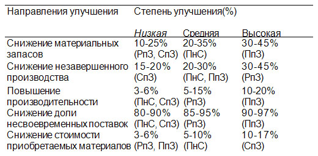

Как показывает практика, степень улучшения отдельных составляющих бизнеса во многом определяется типом производства и его сложностью. Эта зависимость может быть наглядно проиллюстрирована на реальных статистических данных в разрезе типов производств: производство на склад (ПнС), сборка под заказ (СпЗ), производство под заказ (ПпЗ), разработка под заказ (РпЗ) (рис. 4).
 |
Следует сделать важную оговорку: приведенные данные основаны на зарубежных
статистических исследованиях, поэтому их можно воспринимать как оценочные.